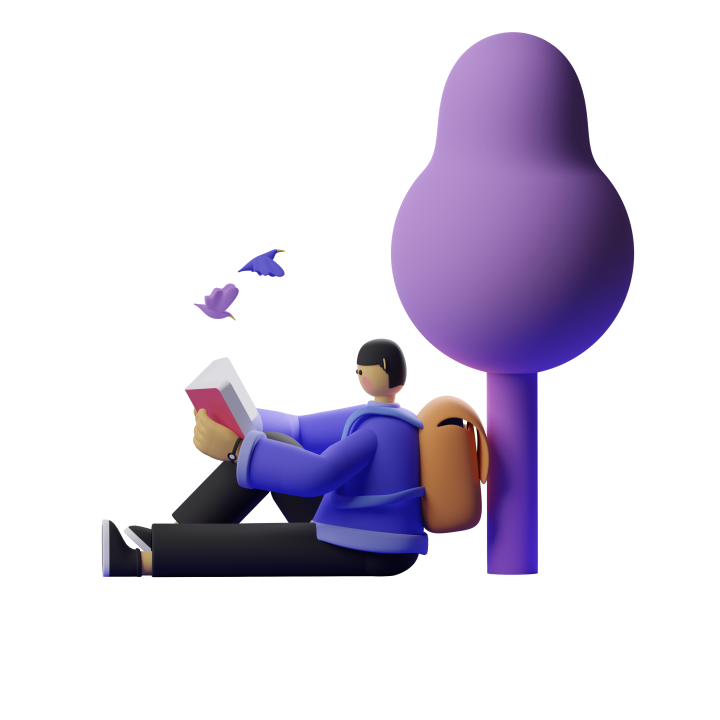

01
НОВИНИ
електронний журнал -
Електронний журнал коледжу зв'язку - це важливий інструмент для
інформування всіх студентів, викладачів та адміністрації коледжу.
Журнал містить різноманітну інформацію про навчальні заходи,
культурні та спортивні події, проекти студентів та наукові досягнення
коледжу.
інформування всіх студентів, викладачів та адміністрації коледжу.
Журнал містить різноманітну інформацію про навчальні заходи,
культурні та спортивні події, проекти студентів та наукові досягнення
коледжу.


02

НОВИНИ
Інформація у журналі
На сторінках електронного журналу можна знайти матеріали про
академічні досягнення студентів, нові навчальні програми та проекти,
які проводяться в коледжі. Також журнал містить розклад занять,
інформацію про проведення конференцій та семінарів, анонси
важливих подій та оголошення.
Електронний щоденник дозволяє вчителям швидко та зручно вносити
інформацію про оцінки, пропущені заняття та інші важливі події в житті
коледжу, а учням - дізнаватися про ці події негайно.
академічні досягнення студентів, нові навчальні програми та проекти,
які проводяться в коледжі. Також журнал містить розклад занять,
інформацію про проведення конференцій та семінарів, анонси
важливих подій та оголошення.
Електронний щоденник дозволяє вчителям швидко та зручно вносити
інформацію про оцінки, пропущені заняття та інші важливі події в житті
коледжу, а учням - дізнаватися про ці події негайно.


03
Про нас
Переваги використання
Основні переваги використання електронного щоденника включають:
1.Швидкий та зручний доступ до інформації про успішність та прогрес у
навчанні.
2.Можливість відстежувати пропущені заняття та дізнаватися про зміни
у розкладі.
3.Поліпшення комунікації між вчителями та учнями.
4.Зручність для вчителів при внесенні оцінок та іншої інформації.
5.Скорочення часу на адміністративні завдання.
1.Швидкий та зручний доступ до інформації про успішність та прогрес у
навчанні.
2.Можливість відстежувати пропущені заняття та дізнаватися про зміни
у розкладі.
3.Поліпшення комунікації між вчителями та учнями.
4.Зручність для вчителів при внесенні оцінок та іншої інформації.
5.Скорочення часу на адміністративні завдання.
